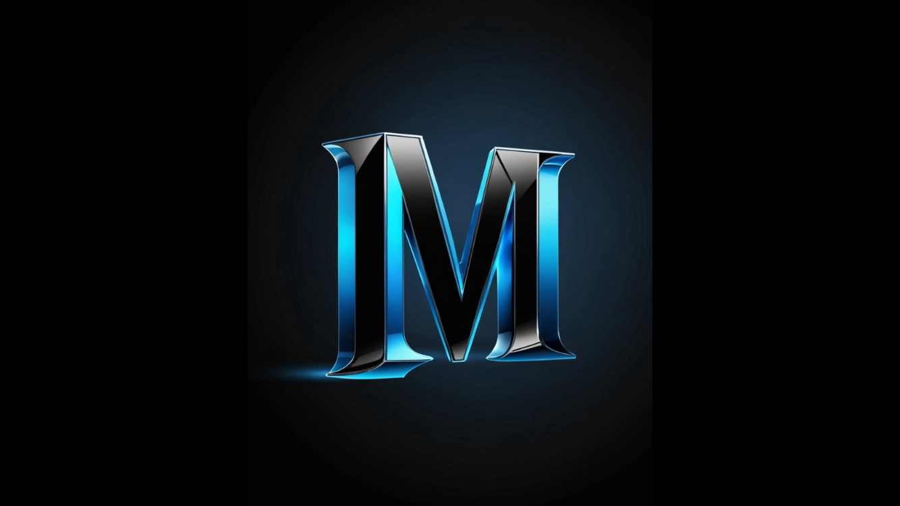
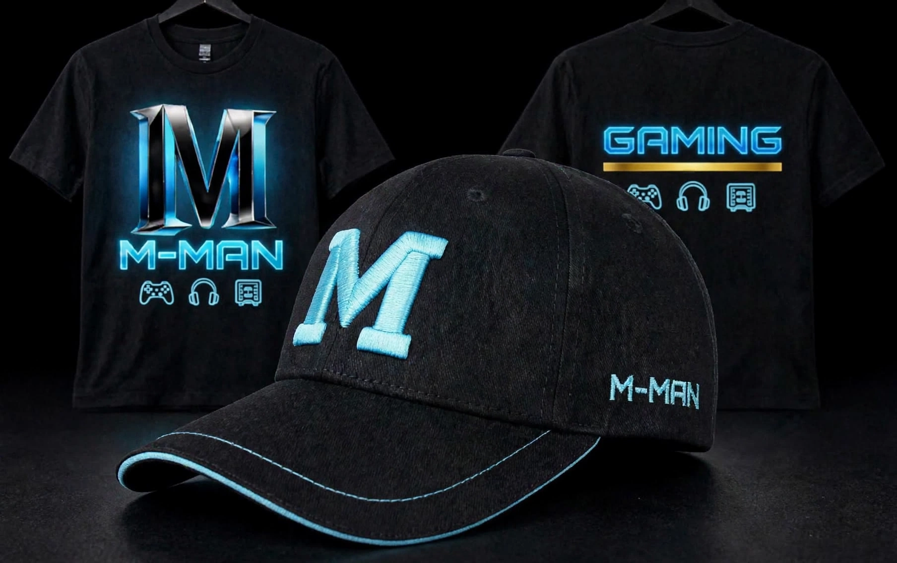

M-Man on YouTube
Scratch programming and gaming videos, shared with a community of over 300 subscribers.
Visit the YouTube channel ↗Featured video
המשחק הזה בלתי אפשרי?!?
M-Man Gaming. A place for gaming, creativity, and the next big idea. Explore the world behind the M.

THE M-MAN SIGNATURE / 01From watching to creating — discover the YouTube and Scratch sides of M-Man Gaming.
Scratch programming and gaming videos, shared with a community of over 300 subscribers.
Visit the YouTube channel ↗Featured video
המשחק הזה בלתי אפשרי?!?
3D games, ray tracing, artificial intelligence, and adventure games — made on Scratch and shared with 34 followers.
Explore M-MANGAIMING on Scratch ↗Featured interests: Raytraced Minecraft · AI
M-Man Gaming is a YouTuber and Scratch creator. His work brings together 3D games, ray tracing, artificial intelligence, and adventure games. His YouTube videos focus on Scratch programming and gaming.
Scratch programming and gaming are at the heart of M-Man Gaming’s YouTube videos, with over 300 subscribers.
With 34 followers on Scratch, M-Man Gaming creates projects involving 3D games, ray tracing, AI, and adventure games.
Raytraced Minecraft and artificial intelligence are among his featured interests — exploring what games and code can do together.
Biography and community counts supplied by the creator for this site; counts may change.
A metallic M. Electric blue edges. A dark backdrop. The M-Man logo brings a bold gaming identity to the channel and its creative world.
Black meets electric blue. A look at the M-Man Gaming T-shirt and cap designs.

The signature M, gaming graphics, and electric blue details.
A black T-shirt with the metallic M and M-MAN graphics on the front, and GAMING artwork on the back.
A black cap with a blue M on the front, M-MAN lettering on the side, and blue stitching along the brim.
Watch the videos on YouTube, explore the projects on Scratch, and follow the next chapter.